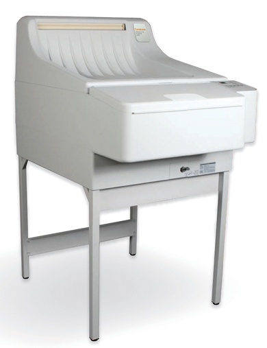

Procesadora médica carestream 2000 (mxp 2000)

DESCRIPCIÓN: La procesadora médica de rayos X CARESTREAM 2000 ofrece un procesamiento automático confiable a un precio muy accesible. Su diseño simple brinda alta confiabilidad, facilidad de uso y mantenimiento.
CARACTERÍSTICAS:
• Capacidad de ciclo ajustable de 60-300 segundos.
• Está diseñada para facilitar las labores de limpieza y mantenimiento.
• Excelente soporte de servicio respaldado por un profesional equipo de especialistas altamente calificado.
ESPECIFICACIONES:
Productividad:
• Ciclo de 60 segundos 245 películas por hora.
• Ciclo de 90 segundos 232 películas por hora.
Dimensiones:
• Longitud 97cm.
• Ancho 68 cm.
• Alto 127 cm.
DATOS COMPLEMENTARIOS: Si desea obtener más información sobre la familia de procesadoras CARESTREAM MXP 2000, favor de contactar al representante de CARESTREAM de su localidad o a:
CARESTREAM
Teléfono: (33) 3134-6200
o bien, visítenos en: www.carestream.com.mx